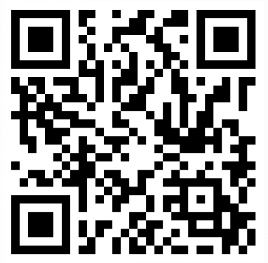

Perfil Profesional
Especialistas en Topografía Aplicada con enfoque en la gestión de ecosistemas geoespaciales complejos. Contamos con una sólida trayectoria en la implementación de metodologías de captura masiva y modelamiento de datos de alta fidelidad. Orientados a la eficiencia operativa mediante el procesamiento avanzado de nubes de puntos y la automatización de análisis geoespaciales para proyectos de infraestructura y desarrollo territorial.
Proyectos Destacados
Información de Contacto
Llámanos
(57) 312 345 6789
Correo
contacto@topografosdecundinamarca.co
Escanéame
